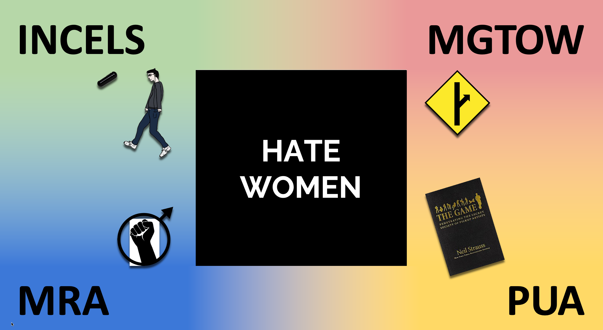

Reddit has had a complicated relationship with community-level moderation. The bans and quarantines have often been delayed and inconsistent. What makes community-level moderation a hard task and can it be improved?

It has become dangerously easy to become an Incel on the internet. In our work, we seek to study how users adopt radical behavior online. We monitor Reddit users and see how their engagement with the Manosphere influences identifiers of radical behaviors.